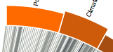
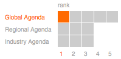

What am I looking at?
This is a visual representation of data derived from a survey of experts from 72 Global Agenda Councils of the World Economic Forum. The experts were asked to answer three survey questions:
- Please select a maximum of 5 Global Agenda Councils that your Council would benefit from interacting with by order of priority.
- Please select a maximum of 3 Industry/Regional Agenda Councils that your Council would benefit from interacting with by order of priority.
- Please describe how it interlinks with your Council.
Using data derived from a survey of these experts, interactive designers are asked to create a data visualization that will help elucidate the interconnectedness among issues, highlight the emerging clusters and catalyse dialogue at the Summit between the Councils.
Explanation
General
Each Council consists of one or more organizations. Respondent Councils are the Councils that filled out the survey. Linked Councils are the Councils the respondent Councils want to interact with. There are 3 agenda's (Global, Regional and Industry) that contain a set of Councils.
Lines

The width of a line represents the number of organizations a respondent Councils want to interact with a linked Council. The color of a line represents the strength of a link: this is the ratio of the number of organization that want to interact with a linked Council versus the total number of organizations for this respondent Council. Darker lines mean stronger links. So, linking with 9 out of 10 organizations to a linked Council will result in a darker line than 1 out of 10, but also darker than 9 out of 20.
Bars
For respondent Councils the width of a bar shows the number of linked Councils this respondent Council wants to interact with, and for linked Councils the width of a bar shows the number of respondent Councils that want to interact with this linked Council. The height of a bar shows the total number of organizations for this Council. So, a linked Council with a small width and a large height has only a few respondent Councils that want interact with it, but a large number of organizations within these respondent Councils want to interact with this linked Council.
Selecting Agenda and Rank
To select a different agenda or rank, click on one of the boxes. The selected agenda and ranks are highlighted. If you click on a box, a range starting from rank 1 will be selected. So, clicking on 3 Regional Agenda will show all the results for Regional Agenda from rank 1 to rank 3.
Showing one Council only
Move your mouse over the bar of a respondent Council or a linked Council to see only this council.
Data
The original data set contains the following entities:
- Rank: the rank from 1 to 5 for Global Agenda and 1 to 3 for Regional / Industry Agenda
- Type: the agenda, either Global Agenda, Regional Agenda or Industry Agenda
- Respondent Council: the Council the organization answering the survey question belongs to
- Respondent Organization Type: Academia, NGO, International Organization, Business, Government or Other
- Respondent Country: the originating country of the organization
- Linked Council: the Council the organization answering the survey question wants to interact with
- Description: explanation why the respondent wants to interact with this Council
Suggestions for future development
The data offers many more opportunities for further investigation and visualization. A few of the unanswered questions are for example:
- How do organization types link to Councils?
- How do countries link to Councils?
- How strong do respondents that link to a certain Council link to each other?
- What does the popularity of a linked Council look like for each rank?
Resources
Disclaimer
This visualization is developed using Protovis. Protovis is free and open-source, provided under the BSD License. It uses JavaScript and SVG for web-native visualizations; no plugin required though you will need a modern web browser! (current versions of IE not supported)